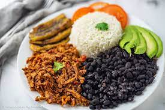

Pabellon

Description
The pabellón criollo is a traditional Venezuelan gastronomic dish, and is considered the "national dish of Venezuela".234 It is so called because of its resemblance to a flag, as it combines different colors.1 The traditional pabellón criollo is composed of cooked white rice, larded beef, black beans and slices of fried ripe plantain.
The history of the pabellón dates back to imperial times, probably the eighteenth century,7 and the story goes that it is basically a gathering of "leftovers" from previous meals by the slaves of the haciendas: meat, rice and black beans were usually from the previous day or two, with the plantain slices being the only thing prepared at the time. This is one version.
Ingredients
larded beef
- 500 grams of beef brisket
- 1 unit of red bell pepper
- 1 unit of white onion
- 2 cloves of garlic
- 2 tablespoons of
- 1 branch of Cilantro
- 2 units of Tomato
- 1 teaspoon cumin blackbeans
Blackbeans
- 300 grams of black Caraotas
- 1 unit of red bell pepper
- 1 unit of white onion
- 4 tablespoons of Papelón (panela)
- 2 cloves of garlic
- 1 teaspoon of cumin
Additional
- 1 pound of cooked white rice
- 2 units of ripe plantains
- 1 liter of oil
- 1 pinch of salt
- 1 pinch of Pepper
Steps
- In a pressure cooker, sear the brisket previously seasoned with salt, pepper and cumin. When it is browned, remove and add the onion, the bell pepper, the tomato without skin and the garlic, all chopped finally, cook very well until it is soft.
- Return the meat to the pot, add the Worcestershire sauce, water or beef broth until it covers the meat a little. Also add the coriander sprig, a little more cumin, salt and pepper. Cover the pressure cooker and cook for 1 hour and a half.
- When the meat is ready, shred it with your hands or a fork and return it to the pot to absorb more of the flavor of the other ingredients. Set aside until ready to serve.
- For the caraotas, soak them the night before, at the moment of preparation add abundant water in a pressure cooker, add the caraotas with some onion and salt, and let cook for 1 hour and a half.
- In a frying pan prepare a sauce with the onion, the red bell pepper, the finely cut garlic and the grated paprika. Then, add it to the beans (if they have a lot of water you can remove a little), cook over medium heat until they thicken a little, adjust the flavor with salt, cumin and pepper.
- In a separate pan with oil over medium heat, fry the plantain slices until golden brown.
- Finally, serve the Venezuelan creole pavilion with the black beans, the shredded meat, the white rice and the plantain slices. If you liked this recipe, have any comments or concerns, please let us know your opinion.